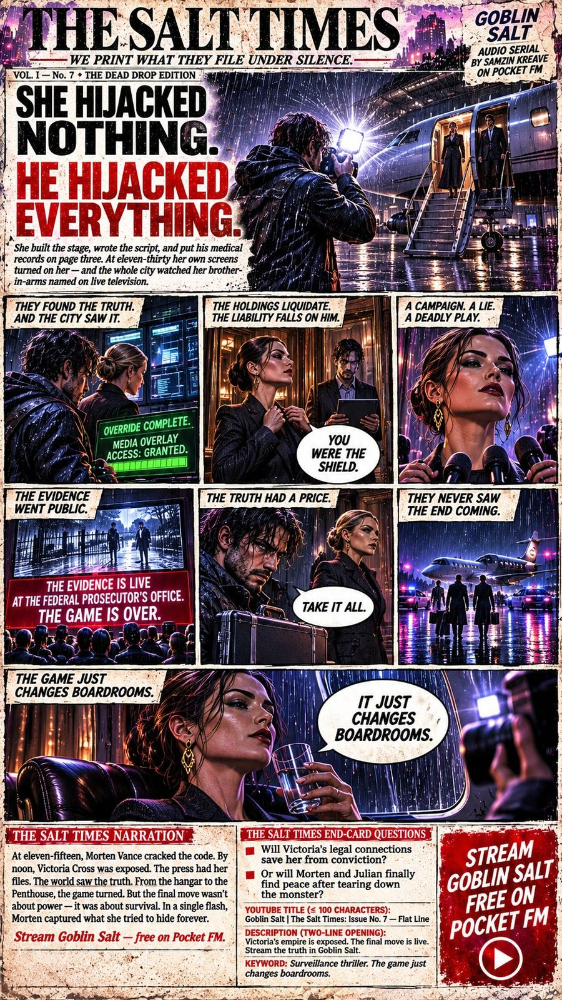
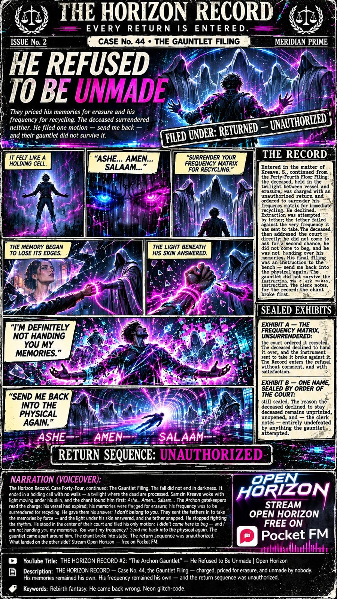

THE NEWSSTAND
The Press WingFour papers, four worlds
Every world in SoulSoundWorld keeps a paper — because in every one of these stories, somebody powerful is filing the truth under silence. The papers print it anyway. New editions premiere as narrated video issues on the YouTube channel; the full stories stream free on Pocket FM.

THE BRIDGE WIRE
The campus paper of Bridge Water University. It prints what the kingdom whispers — and it is always, always on her side.
Latest: Issue No. 13 — “SHE READ EVERYTHING.”

THE SALT TIMES
“We print what they file under silence.” The rogue broadsheet of a city run by watchers — case files, surveillance logs, and the names the Gazette Holding Trust buries.
Latest: Issue No. 7 — “FACE TO FACE. ONE FLASH. GAME OVER.”

THE HORIZON RECORD
“Every return is entered.” The Archon court’s own record paper, leaked to the living — the docket the gatekeepers keep on every soul that passes, and on the one that came back.
Latest: Issue No. 2 — “HE REFUSED TO BE UNMADE.”
THE WAVE SENTINEL
“The scoreboard doesn’t lie.” The Register’s own broadsheet, turned against it — standings, ticks, and the price column, printed in the open.
First edition fronts THE RE-TUNED EDITION — in production now.
Watch the video editions on YouTube → Join THE SIGNAL — new issues first → Collect the editions on Zora →